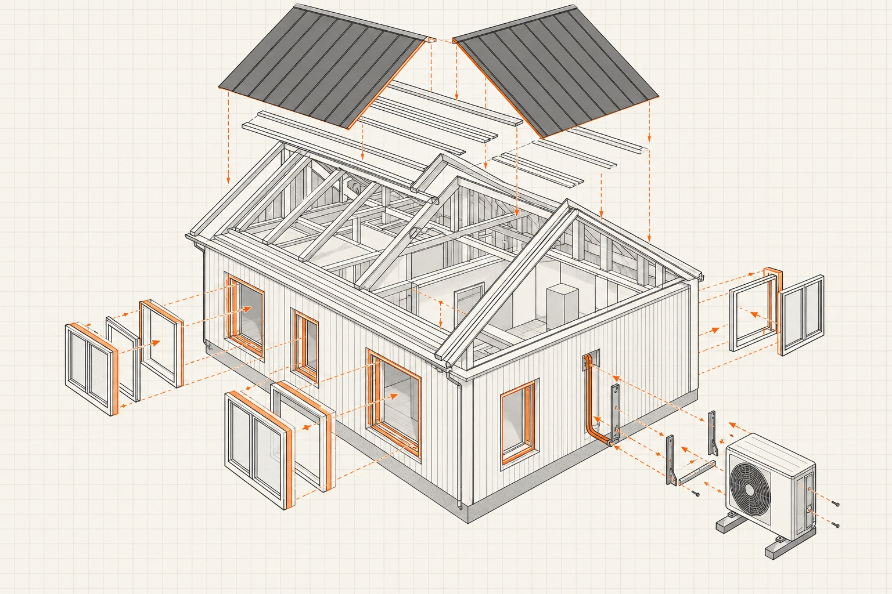

Der energetische Zustand einer Immobilie beeinflusst heute direkt, ob und zu welchen Konditionen eine Bank finanziert. Gebäude der Energieeffizienzklassen F, G und H finanzieren viele Banken nur noch, wenn ein konkreter energetischer Modernisierungsfahrplan vorliegt. Für sehr effiziente Gebäude bieten manche Banken dagegen Zinsvorteile. Wer eine Bestandsimmobilie kauft, sollte die Modernisierungskosten deshalb vor dem Kauf kennen und mitfinanzieren.
Das Wichtigste in Kürze
- Gebäude der Klassen F, G und H finanzieren viele Banken nur noch mit Modernisierungsfahrplan.
- Für sehr effiziente Gebäude gibt es bei manchen Banken Zinsvorteile.
- Modernisierungskosten sollten vor dem Kauf feststehen und gemeinsam mit dem Kaufpreis finanziert werden.
Was die Effizienzklasse für die Finanzierung bedeutet
Die Skala aus dem Energieausweis, darüber die Praxis vieler Banken.
Endenergie in kWh pro m² und Jahr, Grenze zwischen den Klassen
Gemeinsam finanzieren, nicht nacheinander.
Klassengrenzen für Wohngebäude nach GEG · Rechenbeispiel aus dem Artikel, Klasse G · Grafik: Fischer & Geserich
Warum Banken auf den Energiezustand schauen
Für eine Bank ist die Immobilie die Sicherheit für das Darlehen. Alles, was den Wert dieser Sicherheit in Zukunft mindern kann, ist ein Risiko. Ein schlecht gedämmtes Gebäude mit alter Heizung hat drei solcher Risiken.
Erstens den Modernisierungsdruck. Die Anforderungen an Gebäude steigen, und irgendwann muss investiert werden, ob der Eigentümer will oder nicht. Wer das nicht kann, gerät unter Druck. Zweitens die laufenden Kosten. Hohe Heizkosten und ein steigender CO2-Preis machen eine Wohnung für Mieter und Käufer unattraktiver. Bei vermieteten Wohnungen trägt der Vermieter nach dem Kohlendioxidkostenaufteilungsgesetz einen umso größeren Teil der CO2-Kosten, je schlechter das Gebäude ist. Drittens die Wertentwicklung. Käufer zahlen für ineffiziente Gebäude zunehmend weniger, weil sie die Sanierung einpreisen.
Dazu kommt, dass Banken selbst zunehmend darüber berichten müssen, wie klimaverträglich ihr Kreditbestand ist. Gebäude mit schlechter Effizienzklasse machen diese Zahlen schlechter.
Hinzu kommt eine Erfahrung aus den letzten Jahren. Viele Kredite aus der Niedrigzinsphase konnten nach dem Zinsanstieg nicht mehr bedient werden, und die Banken mussten die Ausfälle verkraften. Heute achten sie stärker darauf, dass ein Gebäude auch dann wirtschaftlich bleibt, wenn in den 2030er-Jahren schärfere Klimavorgaben greifen.
Was das in der Praxis bedeutet
Klassen A+ bis B. Neubauten und umfassend sanierte Gebäude. Manche Banken bieten für solche Objekte eigene Darlehen mit einem Zinsabschlag an, oft als „grüne“ Baufinanzierung bezeichnet.
Klassen C bis E. Der Großteil des sanierten Bestands. Hier läuft die Finanzierung in der Regel ohne Besonderheiten, die Effizienz spielt bei Zins und Wert aber zunehmend eine Rolle.
Klassen F bis H. Unsanierte oder kaum sanierte Altbauten. Viele Banken finanzieren solche Objekte nur noch, wenn ein konkreter Plan vorliegt, wie und wann das Gebäude energetisch modernisiert wird. Dazu gehören Maßnahmen, Kosten und Zeitplan. Ohne diesen Plan gibt es oft keine Zusage oder deutlich schlechtere Konditionen. Noch verlangen das nicht alle Banken. Aus unseren Gesprächen mit Banken erwarten wir aber, dass es in den nächsten zwei bis drei Jahren überall so weit ist.
Die Effizienzklasse steht im Energieausweis, den der Verkäufer bei Besichtigung vorlegen muss.
Rechenbeispiel: Kaufpreis und Modernisierung gemeinsam finanzieren
Eine Wohnung in einem Mehrfamilienhaus der Klasse G kostet 220.000 Euro. Für die Modernisierung, die die Bank sehen will, kalkuliert der Käufer 40.000 Euro.
Falsch geplant: Der Käufer finanziert nur den Kaufpreis und will die Modernisierung später angehen. Entweder verweigert die Bank die Zusage ohne Fahrplan, oder sie finanziert, und ein Jahr später fehlen 40.000 Euro. Ein separater Kredit kostet dann mehr, und die Bank prüft die Bonität erneut.
Richtig geplant: Der Käufer legt der Bank vor dem Kauf einen Modernisierungsfahrplan vor und finanziert eine Gesamtinvestition von 260.000 Euro in einem Zug. Teile davon lassen sich je nach Maßnahme über Förderkredite der KfW abbilden. Manche Banken berücksichtigen bei der Bewertung, dass das Gebäude nach der Modernisierung mehr wert ist.
Wichtig ist, die 40.000 Euro schon in der Kaufpreisverhandlung zu nutzen. Ein Gebäude, das in naher Zukunft saniert werden muss, ist weniger wert als ein saniertes, und das sollte sich im Preis zeigen.
Die Reihenfolge der Maßnahmen

Welche Maßnahmen in welcher Reihenfolge sinnvoll sind, hängt vom Gebäude ab. Ein individueller Sanierungsfahrplan von einem Energieberater zeigt das Schritt für Schritt und erleichtert zudem den Zugang zu Fördermitteln.
Bei der Heizung kommt es auf die Reihenfolge besonders an. Wer von Gas auf eine Wärmepumpe umstellt, sollte die Gasheizung nicht im selben Zug ausbauen. Entfernt wird sie erst, wenn sie defekt ist. Warum das technisch und steuerlich einen Unterschied machen kann, erklären wir in einem eigenen Artikel.
Förderprogramme von KfW und BAFA ändern sich regelmäßig in Höhe und Bedingungen. Vor jeder Maßnahme lohnt sich ein Blick auf den aktuellen Stand. Viele Programme müssen Sie beantragen, bevor Sie den Auftrag vergeben.
„Ein Haus mit Energieeffizienzklasse F zu 100 Prozent des Kaufpreises zu finanzieren, das bringt den Banken heute nichts mehr. Sie wollen, dass ein solches Haus energetisch saniert wird.“
Die Einschätzung von Fischer & Geserich
Bei Mehrfamilienhäusern und älteren Eigentumswohnungen prüfen wir den Energiezustand vor dem Kauf. Wenn eine Modernisierung absehbar ist, rechnen wir sie in die Finanzierung ein und nutzen sie in der Preisverhandlung. Die Modernisierung selbst übernehmen wir nicht. Wir vernetzen unsere Kunden mit Energieberatern und Handwerkern, mit denen wir gute Erfahrungen gemacht haben, und begleiten die Entscheidung, was wann sinnvoll ist. Bei Mehrfamilienhäusern gehört dazu auch die Frage, ob sich eine Photovoltaikanlage mit Mieterstrom rechnet.
Häufige Fragen
Finanzieren Banken Immobilien mit Energieklasse G oder H?
Viele Banken finanzieren Gebäude der Klassen F, G und H nur noch, wenn ein konkreter energetischer Modernisierungsfahrplan mit Maßnahmen, Kosten und Zeitplan vorliegt. Ohne diesen Plan gibt es oft keine Zusage oder schlechtere Konditionen. Noch verlangen das nicht alle Banken, in den nächsten zwei bis drei Jahren dürfte es aber überall Standard werden.
Beeinflusst die Energieeffizienzklasse den Bauzins?
Ja. Manche Banken bieten für sehr effiziente Gebäude der Klassen A+ bis B Darlehen mit Zinsabschlag an. Für sehr ineffiziente Gebäude steigen die Anforderungen und teilweise die Zinsen, weil die Bank den Modernisierungsbedarf als Risiko für den Wert ihrer Sicherheit einpreist.
Kann ich die Modernisierung mitfinanzieren?
Ja, und das ist meist der bessere Weg. Wenn die Kosten vor dem Kauf feststehen, lassen sich Kaufpreis und Modernisierung gemeinsam finanzieren, teilweise über Förderkredite der KfW. Wer die Modernisierung erst später finanziert, zahlt oft mehr und muss die Bonität erneut prüfen lassen.
Die Bilder in diesem Beitrag wurden mit KI erstellt.
Der Beitrag dient der allgemeinen Information und ersetzt keine Rechts-, Steuer-, Finanzierungs- oder Anlageberatung. Zinssätze in Beispielrechnungen sind Beispielwerte, keine aktuellen Konditionen.